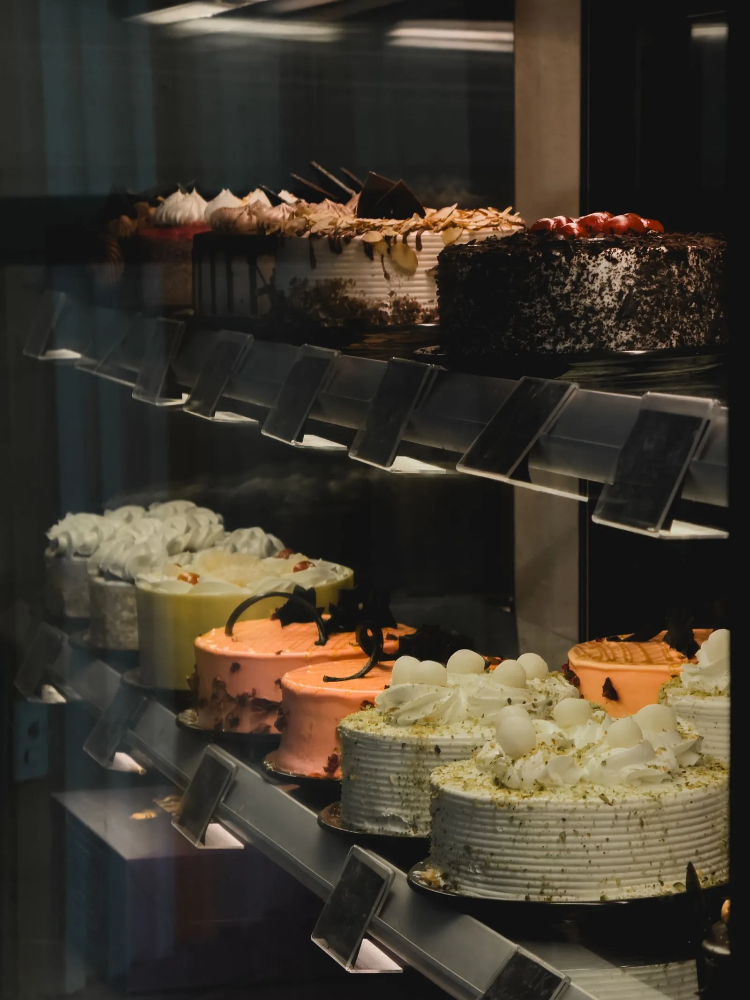
Plum cake & fruit cake
The two cakes reviewers name again and again. Rich without being overly sweet, made to the same recipe regulars have known for years. Take a whole cake home, or a slice with your evening chai.
Islamabad · F-6 Super Market · Friday 13 November 2026
Est. 1948
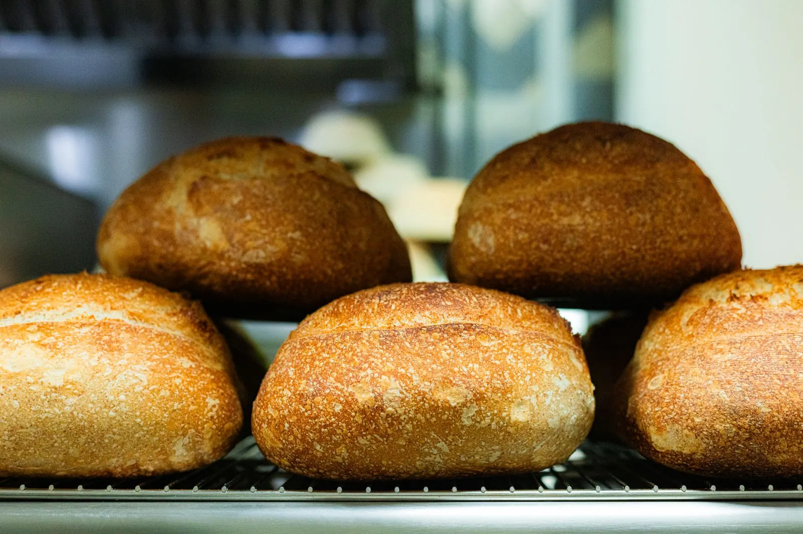
F-6 Super Market · Islamabad · Est. 1948
One counter on School Road. Fresh bread in the morning, plum cake by the afternoon, and gulab jamun that regulars have been coming back for across generations.
From the counter
United Bakery has been on School Road since 1948 — long before the Super Market became the city’s favourite meeting point, and long before most of Islamabad’s newer bakeries existed at all. The signboard still says 1948, and the regulars still say the same thing their parents said: this is where you come for bread that tastes like bread, and cake that tastes like it was made this morning.
There is nothing fancy about the place, and that is the point. The counter is full by morning, the plum cake sells through, and the gulab jamun — warm, syrupy, unapologetically old-school — is the thing people drive across the city for. One reviewer put it plainly: the bakery carries “a deep nostalgic taste that instantly transports you to an old-school era.”
What keeps people coming back is not a menu that changes with the season. It is the opposite: recipes that have been kept, not reinvented. As one long-time customer wrote, “you can tell the recipe has been carefully preserved over generations.”
“Their plum cake is an absolute standout, rich, moist, and delicious without being overly sweet. You can tell the recipe has been carefully preserved over generations.”
— Hassan A, 5/5 on Google, via Wanderlog
“When you buy something from this place, you are sure that it is what it says it is. I have been buying bakery items from this shop for years, and I found the quality consistent.”
— Traveler W, 5/5 on Google, via Wanderlog
The bread board
The counter is stacked from the first bake of the day. Loaves, rolls and flatbreads — baked in the morning, sold the same day.
Prices on request — ask at the counter or call the bakery.
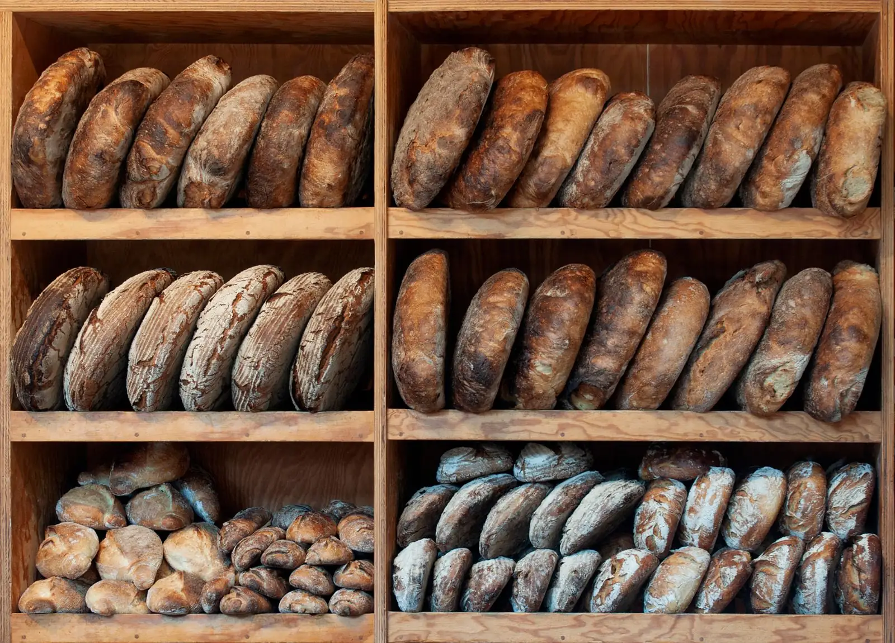
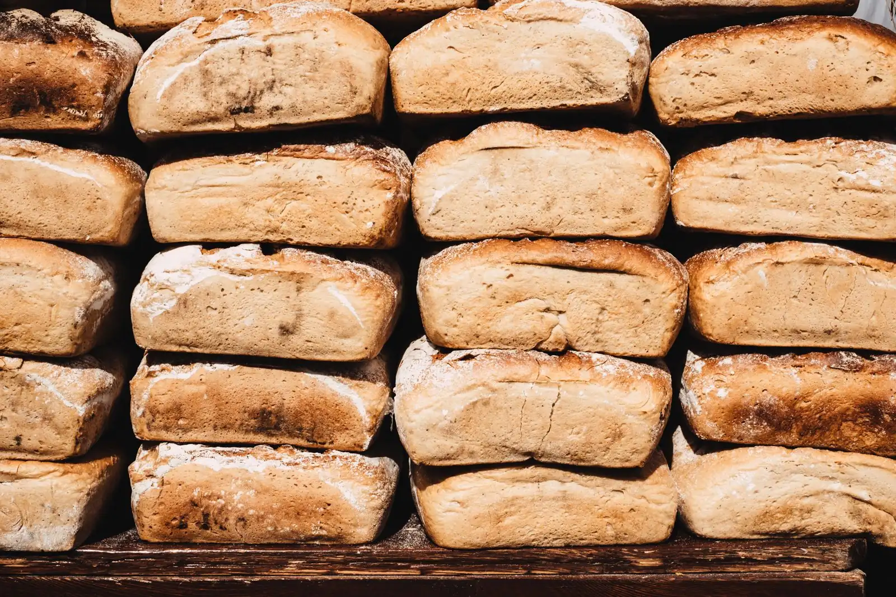
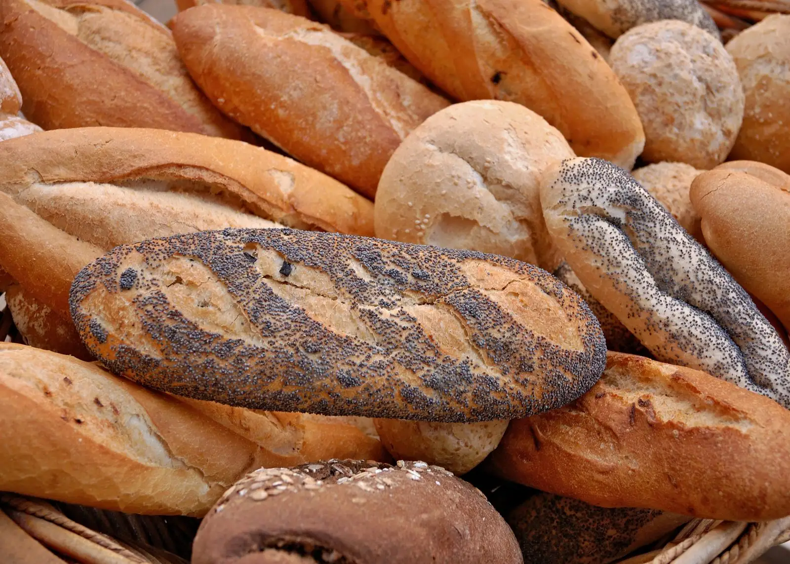
The cake case
Ask any regular what to take home and the answer is the same: the plum cake. Reviewers call it rich, moist and “an absolute standout” — and the fruit cake “packed with flavor and a richness that’s hard to find elsewhere today.”

The two cakes reviewers name again and again. Rich without being overly sweet, made to the same recipe regulars have known for years. Take a whole cake home, or a slice with your evening chai.
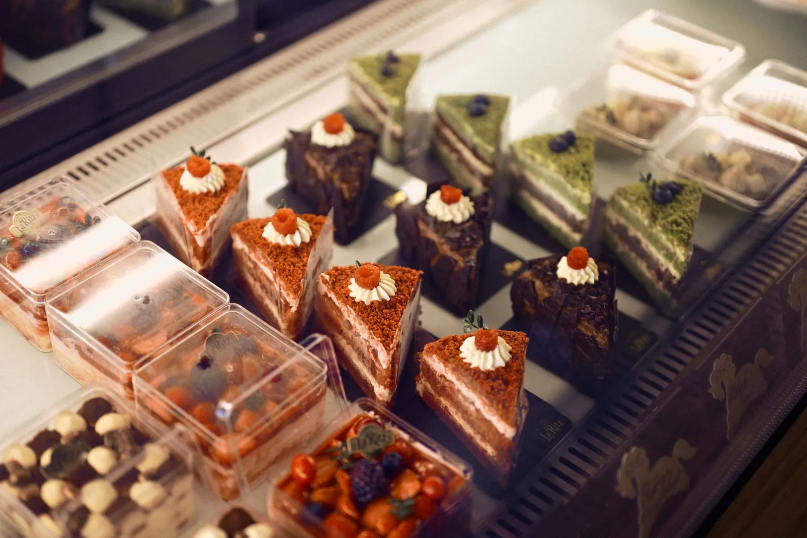
Cake slices in the case for a quick treat — pick from what’s baked that day.
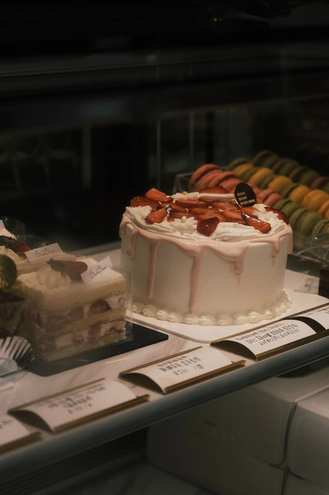
Birthdays, weddings, Eid — call the bakery ahead to ask about a celebration cake for your occasion.
The sweet counter
Warm from the syrup, soft all the way through — the gulab jamun is the sweet regulars mention most, and the one first-timers are told to try. Reviewers call them “a lit” and praise their rich flavour and old-school charm.
Alongside them, the counter keeps cake rusks — the dry, dunkable kind that regulars buy by the bag for the drive home — and the bakery’s other sweets, sold by weight at the counter.
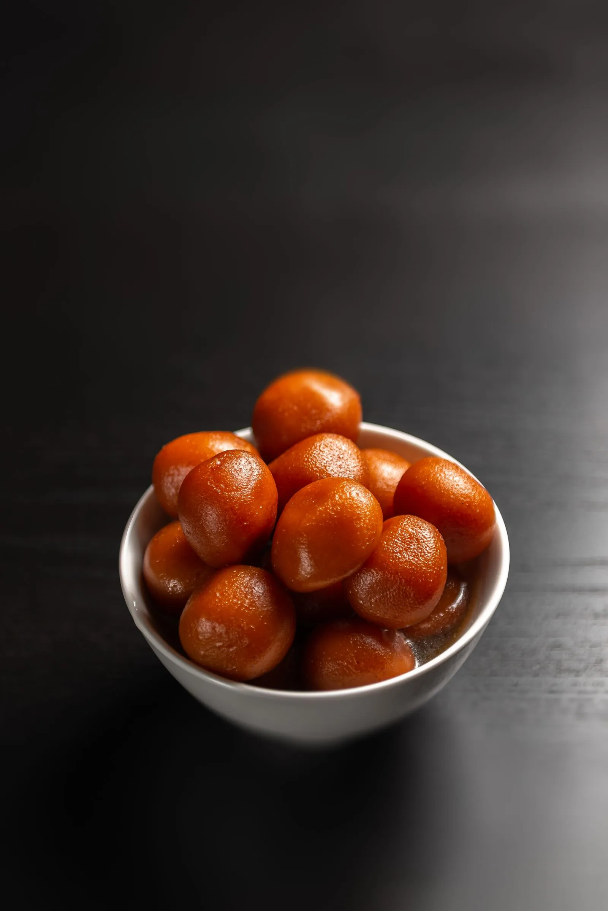
Pastries & the morning tray
Croissants and pastries come out of the oven through the morning. Golden, flaky, and best while they are still warm.
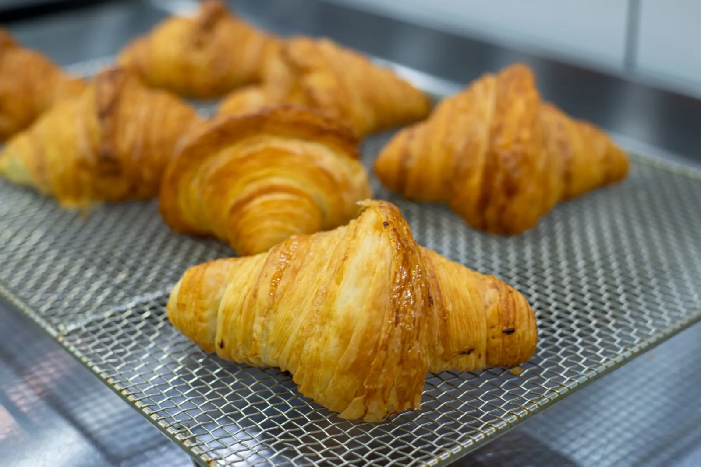
Flaky layers, golden crust — straight off the cooling rack.
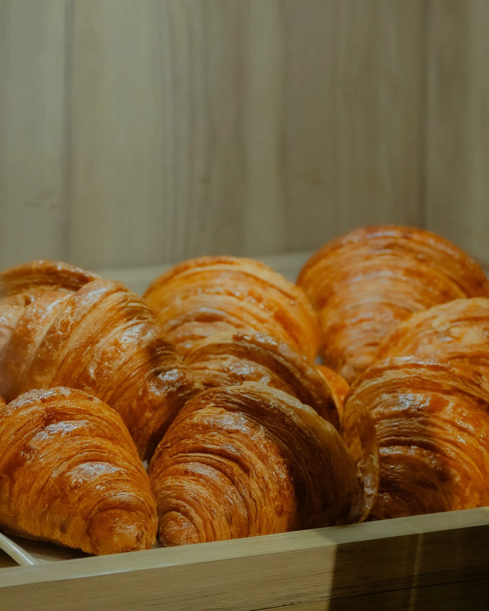
Take a tray for the office or the family breakfast table.
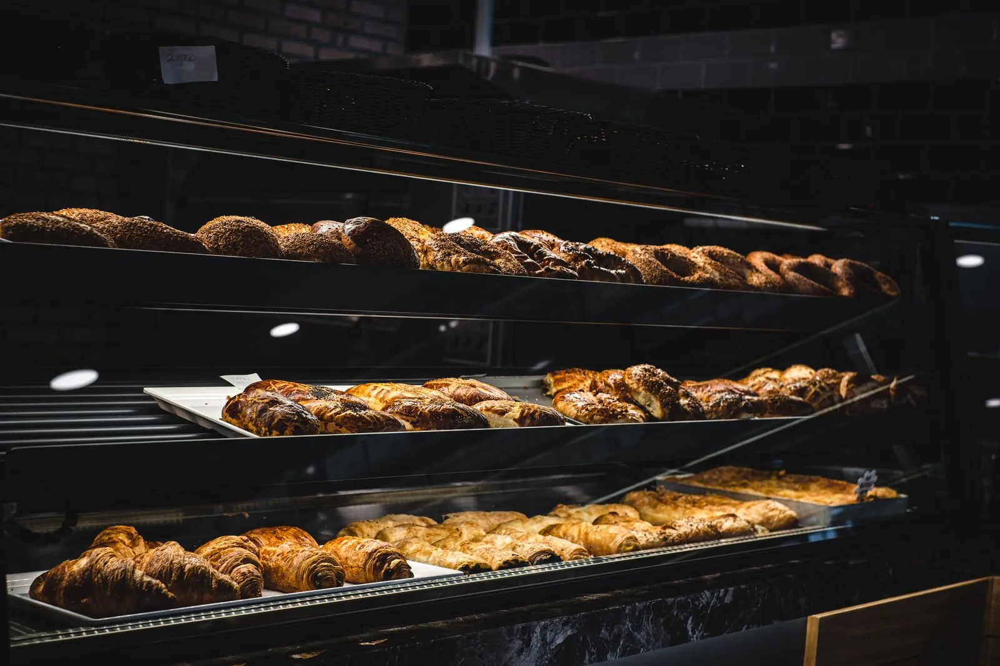
The full morning range, behind glass — point and pick.
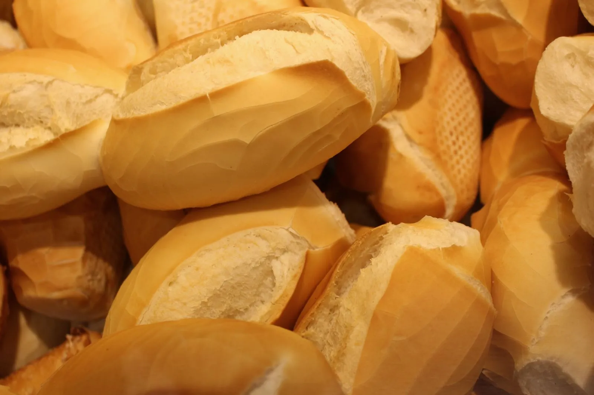
Soft rolls for breakfast, sandwiches, or the school run.
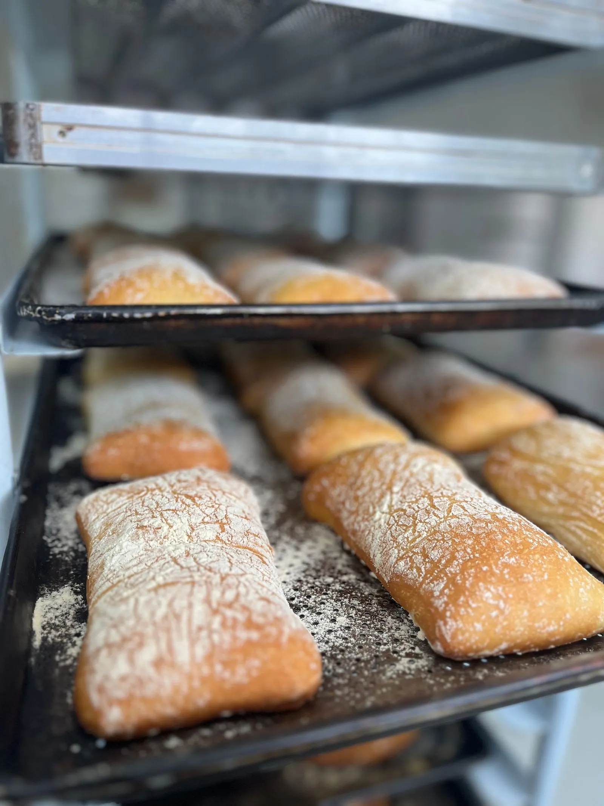
Flour-dusted and cooling on the tray — best the same day.
Drag or scroll sideways to see the whole tray.
Since 1948
No one at the bakery will give you a corporate history. What they will give you is the same counter, the same ovens, and the same recipes — for over seventy-five years.
Chapter 01
The bakery’s own signboard dates it to 1948, making it one of the very first bakeries in the capital. It opened its doors when Islamabad was still being imagined — and it has been baking through every chapter of the city since.
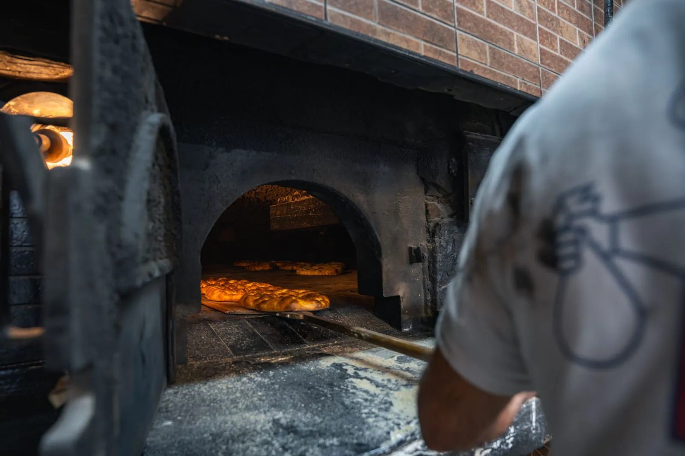
Chapter 02
Ask around F-6 and someone will tell you their father bought bread here, or that they came back after years abroad just to taste the cake rusks again. One customer wrote that her husband, back in Pakistan after years away, wanted to relive the memory of buying cake rusks here as a boy. That is the bakery’s real history — written by its customers.
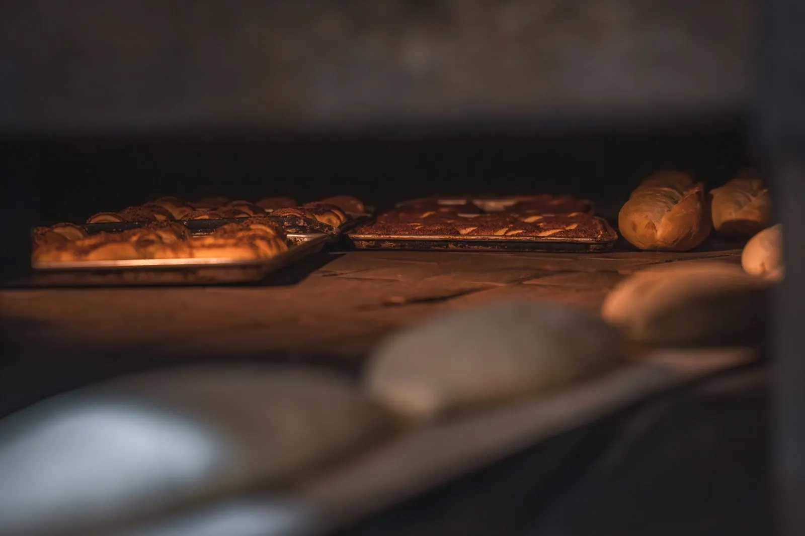
Chapter 03
The Super Market around it has changed beyond recognition, but the bakery has not chased the trends. The doors open at 6:30 in the morning, the ovens are already hot, and the counter is full. Cash only, still — so bring some along.
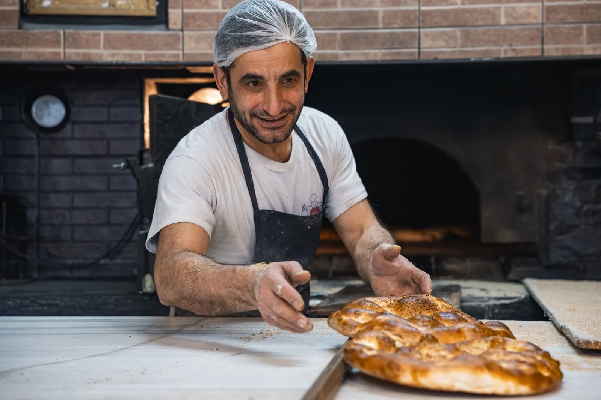
Why locals choose United Bakery
Six themes come up again and again in the bakery’s Google reviews.
A nostalgic flavour that regulars say takes them straight back to the Islamabad they grew up in.
The two cakes reviewers name most — rich, moist, and made to a recipe kept for generations.
Warm, syrupy and praised by name in review after review.
Customers who have bought here for years say the taste has stayed the same.
Reviewers note the tidy counter, the professional staff and the helpful service.
Regulars describe the prices as reasonable for the quality on the counter.
The counter, in pictures
Tap any photo to see it full size.
Good to know before you visit
United Bakery does not accept cards or digital payments. Reviewers in 2025 report cash only — so keep some in your pocket.
The Super Market gets busy, and parking around School Road can be a squeeze. Come early in the morning for the easiest visit.
Most visitors are in and out in about ten minutes — pick from the counter, pay, and you are on your way.
For a birthday or wedding cake, call the bakery ahead on 051 227 4451 to ask what can be made for your date.
Visit
In the heart of F-6 Super Market — the market Islamabad has shopped in for generations.
Phone +92 51 227 4451
Hours Every day, 6:30 AM – 11:00 PM
Payment Cash only
Plus code P3HG+Q3C
Questions, answered
On School Road in F-6 Markaz — the Super Market — in Islamabad. The building itself is known locally as the United Bakery Building.
Every day, 6:30 AM to 11:00 PM, including Sundays.
Reviewers name the plum cake and fruit cake first, then the gulab jamun and the fresh breads. The bakery has been baking since 1948, and regulars come for the old-school recipes.
No — reviewers report cash only, with no card or digital payments accepted. Bring cash.
Call the bakery on 051 227 4451 ahead of your occasion to ask what can be made for your date.
Parking around the Super Market can be difficult at peak hours. Mornings are the easiest time to visit.
The counter sells through during the day. If you are coming for something specific — a plum cake, a tray of gulab jamun, a celebration cake — a quick call saves the trip.